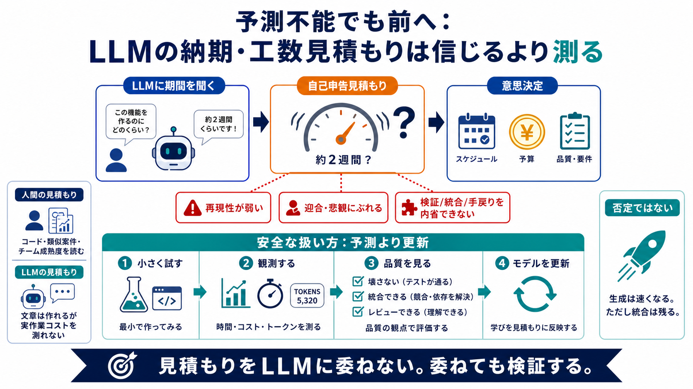

Can Agentic Engineers Estimate Software Delivery in the Age of AI?
Initial source page

Initial source page
| Metric Category | Traditional Metrics | Agentic Engineering Metrics | --- | Output | Lines of code, story points | F…
Estimated Cost: $120,000 to $200,000 annually. ##### 4. Security and Compliance OAuth flows, token lifecycles, consen…
That meter is also getting more expensive on a per-token basis. Claude Sonnet 5's standard API pricing, effective Septem…
complex engineering tasks like debugging, refactoring, and maintaining architectural consistency. [...] is the key enabl…
1. Agentwashing: Organizations often conflate AI assistants with AI agents, which can lead teams to overestimate their m…